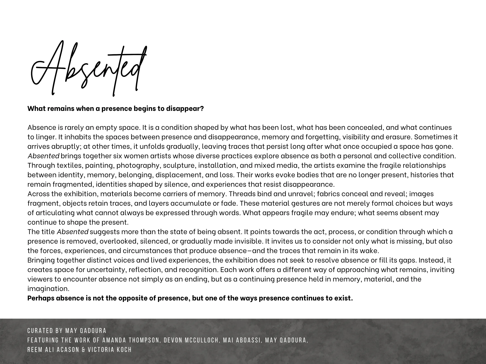

Absented
What remains when a presence begins to disappear?
Absence is rarely an empty space. It is a condition shaped by what has been lost, what has been concealed, and what continues to linger. It inhabits the spaces between presence and disappearance, memory and forgetting, visibility and erasure. Sometimes it arrives abruptly; at other times, it unfolds gradually, leaving traces that persist long after what once occupied a space has gone.
Absented brings together six women artists whose diverse practices explore absence as both a personal and collective condition.
Through textiles, painting, photography, sculpture, installation, and mixed media, the artists examine the fragile relationships between identity, memory, belonging, displacement, and loss. Their works evoke bodies that are no longer present, histories that remain fragmented, identities shaped by silence, and experiences that resist disappearance.
Across the exhibition, materials become carriers of memory. Threads bind and unravel; fabrics conceal and reveal; images fragment, objects retain traces, and layers accumulate or fade. These material gestures are not merely formal choices but ways of articulating what cannot always be expressed through words. What appears fragile may endure; what seems absent may continue to shape the present.
The title Absented suggests more than the state of being absent. It points towards the act, process, or condition through which a presence is removed, overlooked, silenced, or gradually made invisible. It invites us to consider not only what is missing, but also the forces, experiences, and circumstances that produce absence—and the traces that remain in its wake.
Bringing together distinct voices and lived experiences, the exhibition does not seek to resolve absence or fill its gaps. Instead, it creates space for uncertainty, reflection, and recognition. Each work offers a different way of approaching what remains, inviting viewers to encounter absence not simply as an ending, but as a continuing presence held in memory, material, and the imagination.
Perhaps absence is not the opposite of presence, but one of the ways presence continues to exist.
CURATED BY MAY QADOURA
FEATURI NG THE WORK OF AMANDA THOMPSON, DEVON MCCULLOCH, MAI ABOASSI , MAY QADOURA,
REEM ALI ACASON & VI CTORI A KOCH
